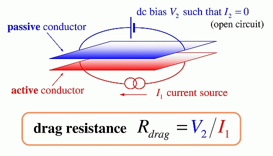
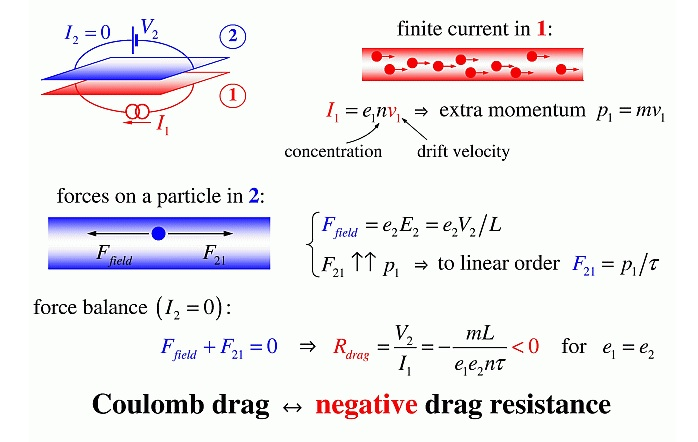
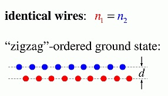
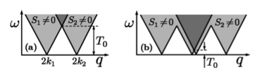
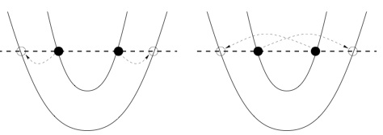

Generation of spin current by Coulomb drag
Coulomb drag between two wires results from Coulomb repulsion between electrons
in the different wires, it exists in the absence of tunneling between the wires.
Typical experimental set-up involves two wires (or, two conducting layers).
Current I1 is driven via the active wire while in the passive one one adjusts
voltage V2 so that I2=0. Figure below illustrates this
(borrowed from M. Pustilnik's
talk).

Drag resistance can be calculated by equating forces acting on electron in the passive wire.

In 1D wires, and at very low temperature, processes with large momentum transfer (2kF)
between the wires are the most important. They are most effective when wires have equal densities,
n1 = n2, in which case the wires "lock up" into zig-zag pattern
(inter-wire charge density wave).

The wires are, however, seldom completely equal. In that case one can apply magnetic field
in order to tune densities of up-spin and down-spin electrons in the different wires separately.
Indeed, assume first that n1 < n2 so that momentum mismatch between
the wires forbids formation of the zig-zag order. Applied magnetic field changes densities
of up- and down-spins, and one can now match the density of, say, up-spin electrons
in the active wire with that of down-spin electrons in the passive one. In fact, under this
conditions one generates spin current in the second wire, I2s =
I2,↑ - I2,↓ ≠ 0 even though the charge current is absent,
I2 = 0.
See Generation of spin current by Coulomb drag, M. Pustilnik, E. G. Mishchenko, and O. A. Starykh,
Phys. Rev. Lett. 97, 246803 (2006)
for many more details.

Once tunneling between the wires is allowed, one needs to think of many more processes.
A very interesting one, called Cooper scattering, transfers pairs of electrons between the wires:
this process always conserves momentum, even when densities in the wires are very different.
In a single, two-subband wire such a process can generate superconducting correlations
between electrons, even though the interaction is purely repulsive:
Oleg A. Starykh, Dmitrii L. Maslov, Wolfgang Häusler, and Leonid I. Glazman,
Gapped phases of quantum wires, -
cond-mat/9911286; published in
Low-Dimensional Systems:
Interactions and Transport Properties, pp.37-78, T. Brandes (Editor),
Lecture Notes in Physics No. 544, Springer, 2000.
